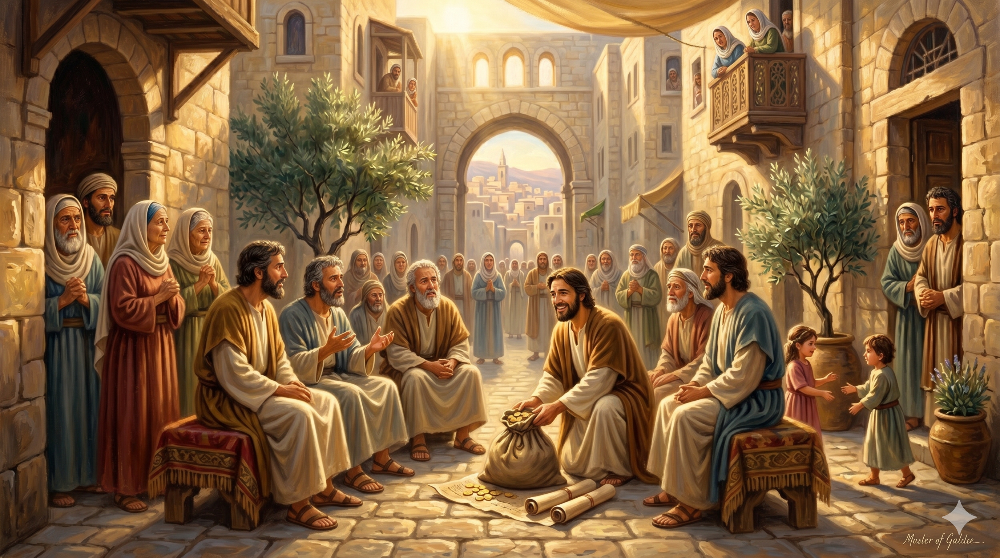
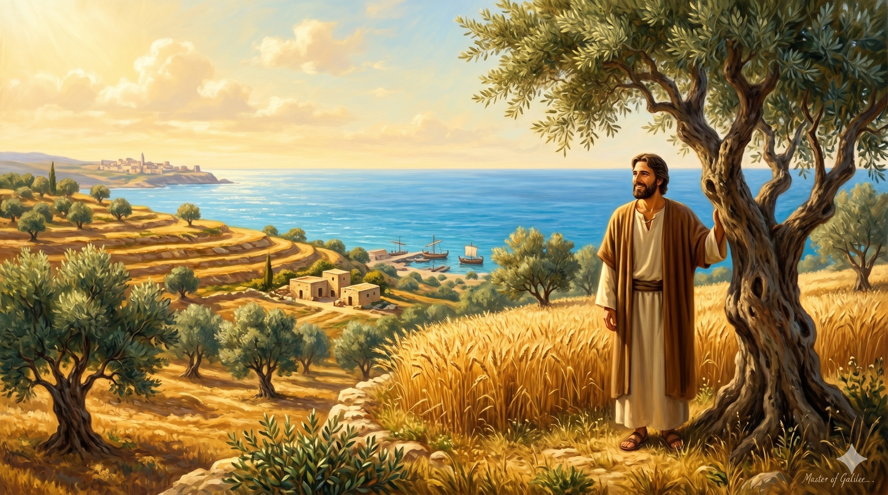

예루살렘 초대교회 공동체 — 바나바가 밭 판 돈을 사도들의 발 앞에 내려놓는 장면. 넓고 환한 공동체 뜰에서, 그의 얼굴에는 계산 없이 내어주는 순수한 기쁨이 넘쳐 흐른다
"구브로에서 난 레위족 사람이 있으니 이름은 요셉이라 사도들이 일컬어 바나바라 하니 (번역하면 위로의 아들이라) 그가 밭이 있으매 팔아 그 값을 가지고 사도들의 발 앞에 두니라" — 사도행전 4:36-37
사도행전 4장은 초대교회가 유무상통하던 아름다운 시절을 기록합니다. 성령 강림 이후 수천 명이 믿음의 공동체가 되었고, 많은 이들이 자신의 소유를 팔아 필요한 사람들과 나눴습니다. 그 중에서 누가는 한 사람을 특별히 이름으로 소개합니다. 바나바. 그의 본명은 요셉이었습니다. 레위 지파 출신으로 구브로(키프로스)에서 태어난 그는 사도들에게 '바나바'라는 별명을 얻었습니다. '위로의 아들'이라는 뜻입니다. 이름이 붙여진다는 것은 그 성품이 공동체 안에서 이미 충분히 인정받았다는 의미입니다.
바나바의 첫 등장은 매우 단순합니다. 밭을 팔아 그 돈을 사도들의 발 앞에 두었습니다. 긴 연설도, 조건도, 기대도 없었습니다. 그저 내어주었습니다. 이 짧은 두 절이 바나바를 소개하는 전부입니다. 그러나 이 단순한 행위 하나가 이후 사도행전 전체에서 펼쳐질 그의 삶 — 바울을 끌어안은 일, 안디옥 교회를 세운 일, 마가에게 두 번째 기회를 준 일 — 모든 것의 예고편이었습니다. 바나바는 처음부터 끝까지 주는 사람이었습니다.

구브로 섬의 밭 — 팔기 전 마지막으로 그 땅을 바라보는 바나바. 그의 눈빛에는 아쉬움보다 기쁨이 가득하다. 배경으로 지중해의 푸른 바다가 펼쳐진다
'위로의 아들'이라는 이름은 스스로 붙인 것이 아닙니다. 공동체가 그 사람의 삶을 보고 붙여 준 이름입니다. 오늘 우리가 속한 가정, 교회, 직장에서 사람들은 우리를 어떤 이름으로 부를까요? 우리가 가는 곳에 위로와 기쁨이 더해집니까, 아니면 불평과 긴장이 따라옵니까? 바나바처럼 나의 존재 자체가 주변 사람들에게 힘이 되는 삶, 그것이 성령으로 충만한 삶의 자연스러운 열매입니다.
바나바가 밭을 판 것은 단순한 자선이 아니었습니다. 그것은 자신이 하나님 나라에 속해 있다는 신앙 고백이었습니다. 내 소유가 영원하지 않다는 것을 알고, 영원한 것을 위해 지금 가진 것을 기꺼이 내어놓는 삶. 우리도 그 자리에 서 있습니까? 내가 지금 붙들고 있는 것이 무엇인지, 그리고 주님을 위해 내어놓을 준비가 되어 있는지 오늘 조용히 물어보십시오.
위로의 아들이라는 이름은 거저 주어지지 않습니다.
내어주는 삶이 쌓여 그 이름이 됩니다.
오늘 당신은 누구에게 위로의 아들, 위로의 딸이 되어 줄 수 있습니까?